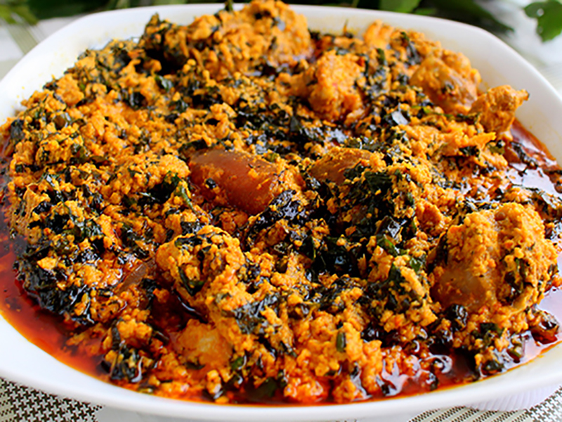

Egusi Soup

Description
Egusi is a Nigerian delicacy which is of the Igbo tribe origin and very popular among major tribes in Nigeria and the whole of West Africa.
To show its popularity, it is usually prepared for occasions or festive activities like traditional marriages, parties and so on.
Ingredients
- grounded egusi seed
- chopped pepper
- salt
- smoked fish
- dry fish
- stock fish
- grounded cray fish
- 1 pound of beef
- palm oil/red oil
- marshed bitter leaves/vegetable
- water
- sliced onion (optional)
- seasoning cube
Steps
- Cut meat into desired shape, season with salt, seasoning cube, onions; wash stockfish and dry fish with hot water and boil together with the meat for 3-5 minutes
- Heat only the palm oil in a large pot, add small quantity of sliced onions and stir for 1-2 minutes
- Add grounded egusi seed and stir
- When the melon has fried for about 3-5 minutes, add water till you achieve your desired thickness
- Boil for a couple of minutes while adding the boiled meat; add salt; add pepper; add all the fishes mentioned
- Add bitterleaf or vegetable, stir and simmer for 5 minutes